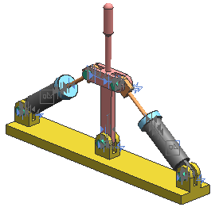

再次查看位置度列并注意到位置度标记现在是黑色的了。
大部分组件都是部分约束，这对一个转换的装配来说很寻常，需要对新的装配约束进行一些编辑。
在装配导航器中，des06_rockr_assembly 节点的下方，展开约束节点。
在其中一个 des06_rockr_piston 节点下方，展开约束节点。
在图形窗口中，查看约束标志。

所有的约束标志默认将显示在图形窗口中，要移除显示，右击顶层约束节点并清除在图形窗口中显示约束复选框。
关闭所有部件。